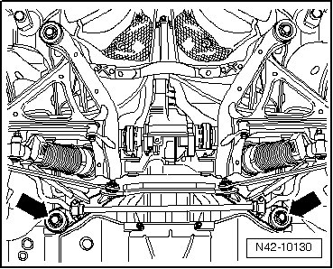
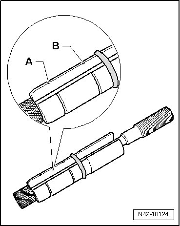
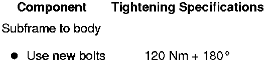

Subframe, Securing
Subframe, Securing
Special tools, testers and auxiliary items required
• Locating pins (T10300)
• Torque wrench (VAG 1332)
• Torque wrench (VAG 1331)
• Engine and transmission jack (VAG 1383 A) or
• Scissor lift table (VAS 6131)
For certain components on the vehicle, the subframe or complete rear axle must be removed. For installation, the original position of the subframe can be retained by using locating pins (T10300). Always install locating pins just prior to lowering subframe or complete rear axle. After completing repair work, road test must be performed; if steering wheel is crooked, vehicle alignment must be performed. Refer to --> [ Wheel Alignment ] Wheel Alignment.
- Place the engine and transmission jack (VAG 1383 A) or the necessary mounts under the subframe.
- Remove bolts - arrows -.

- At these two points, thread in locating pins (T10300) up to marking - A - by hand.

- Tighten locating pins to 30 Nm, counter hold sleeve at flats using open end wrench to prevent it from turning.
Position of subframe is now secured.
Removal of locating pins (T10300) is performed in the reverse order of installation.
Tightening Specifications
